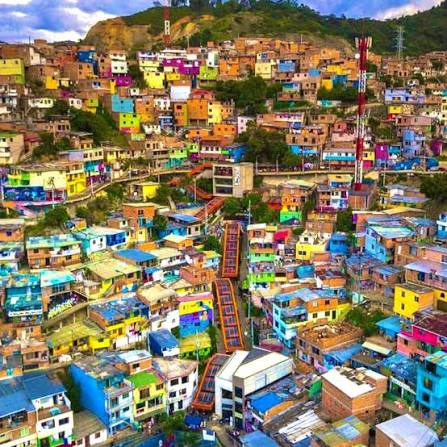

Gardel, Tango et découvertes colombiennes
Vivez une expérience unique au Festival International de Tango de Medellín, l'un des plus prestigieux d'Amérique latine. Medellín n'est pas une ville de tango par hasard : c'est ici que Carlos Gardel, la légende du tango, a trouvé la mort en 1935, faisant de cette ville le sanctuaire de sa mémoire et le berceau du tango colombien.
Les régions visitées
💃 Le Festival
- Milongas sous les étoiles
- Cours avec maestros internationaux
- Spectacles de haut niveau & Tangovia
- Inauguration & Despedida

🏛️ Bogotá & les Andes
- Quartier colonial de la Candelaria
- Musée de l'Or (trésors précolombiens)
- Mirador de Monserrate (3 152 m)
- Cathédrale de Sel de Zipaquirá

🌸 Medellín innovante
- Musée d'Antioquia & Place Botero
- Metrocable & Comuna 13
- Musée de la Mémoire
- Parc Arví & nature

🏞️ Guatapé
- Piedra del Peñol (740 marches)
- Panorama exceptionnel sur le lac
- Village aux façades colorées
- Zócalos peints traditionnels
L'âme du tango à Medellín
Danser au cœur de la ville qui a vu naître le tango colombien, là où Gardel a laissé son empreinte éternelle.
Votre itinéraire jour par jour
1re semaine : Bogotá & Début du Festival
Arrivée à Bogotá
Formalités d'arrivée et première découverte à votre rythme du quartier historique de la Candelaria.
Cœur culturel de Bogotá
Visite du célèbre Musée de l'Or et montée au Mirador de Monserrate pour une vue panoramique vertigineuse.
Excursion à Zipaquirá
Découverte de la spectaculaire Cathédrale de Sel, architecture souterraine et lumière mystique.
Légende de l'Eldorado
Direction la lagune sacrée de Guatavita et repas champêtre près de la « Maison folle » (La Casa Loca).
Quartier El Paraíso
Visite guidée de ce quartier emblématique pour comprendre les contrastes et la richesse de la capitale.
Cap sur Medellín
Vol intérieur Bogotá → Medellín. En soirée : Inauguration officielle du Festitango.
2e semaine : Festival, Guatapé & Retour
Immersion au Festitango
Milongas, spectacles de haut niveau, cours avec des maestros et ambiance de la Tangovia.
L'art à Medellín
Découverte du Musée d'Antioquia et de l'emblématique Place Botero.
Transformation urbaine
Trajet en Metrocable, visite de la Comuna 13, du Musée de la Mémoire et du Parc Arví.
Excursion à Guatapé
Ascension des 740 marches de la Piedra del Peñol et balade dans le village aux zócalos colorés.
Despedida
Dernières milongas et cérémonie de clôture du Festival.
Retour
Vol Medellín → Bogotá, puis vol international de retour vers la France.
Sur les pas de Carlos Gardel
Medellín, ville d'adoption du plus grand tanguero de tous les temps. Un pèlerinage pour les amoureux du tango.
Votre itinéraire sur la carte
Cliquez sur chaque point doré pour découvrir les étapes de votre voyage. La ligne rouge trace votre parcours à travers les Andes colombiennes, sur les traces du tango.
Voyagez l'esprit tranquille : Zones sécurisées
Si certains endroits de Colombie restent à éviter, toutes les zones visitées lors de ce voyage sont parfaitement sûres pour les touristes. Nous appliquons les règles de bon sens suivantes :
- Ne pas marcher seul(e) tard le soir dans les rues désertes.
- Faire appeler un taxi (Cabify / Uber) par votre hôtel.
- Éviter les attitudes ostentatoires (bijoux, argent visible).
- Utiliser les distributeurs uniquement en journée, dans des lieux fréquentés.
- Redoubler de vigilance contre les pickpockets dans les transports en commun.
Prêt à danser à Medellín ?
Construisons ensemble votre itinéraire sur mesure pour le Festitango 2027.
Parlons de votre projet →